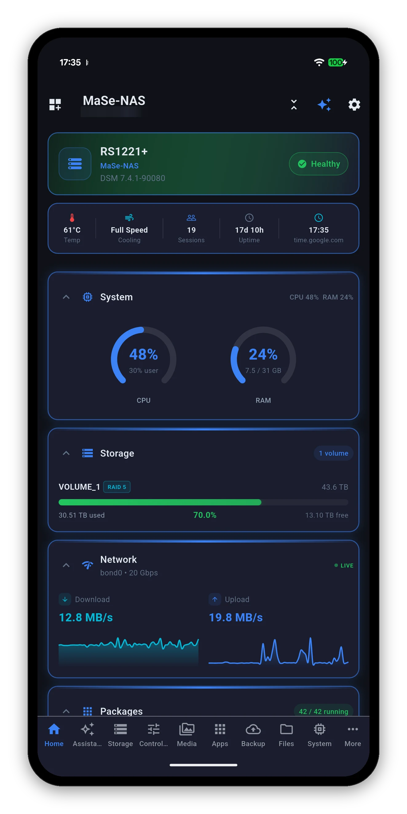

Syno Manager is an independent, native iOS app for your Synology NAS. Live system, storage and network readings, Docker, cameras, photos, backups and files in one app, with home screen widgets, Siri and an assistant that runs on the phone.
One $6.99 universal purchase covers iPhone, iPad and Mac.

The same app on every Apple device you own, laid out for the screen it is on.
Health, storage, backup, temperature and fan, Docker, cameras, network, UPS, downloads, volumes and more. Each one shows when its numbers were taken.
The synomanager:// links open any screen, so a Shortcut with a Siri phrase takes you straight to storage, backups or Wake-on-LAN.
Ask about your NAS in plain words. On a device where Apple Intelligence is supported and enabled, the model runs on the phone and nothing leaves it.
Recent iPhone shots are decoded on the device, so your Synology Photos library shows pictures rather than broken tiles.
Surveillance Station cameras live, at home or away, over QuickConnect too.
Your DSM credentials are held in the iOS Keychain. 2FA codes are supported and a trusted device is remembered.
$6.99 once for iPhone, iPad and Mac. No ads, no subscriptions, no in-app purchases. Needs a Synology NAS on DSM 7.0 or later.